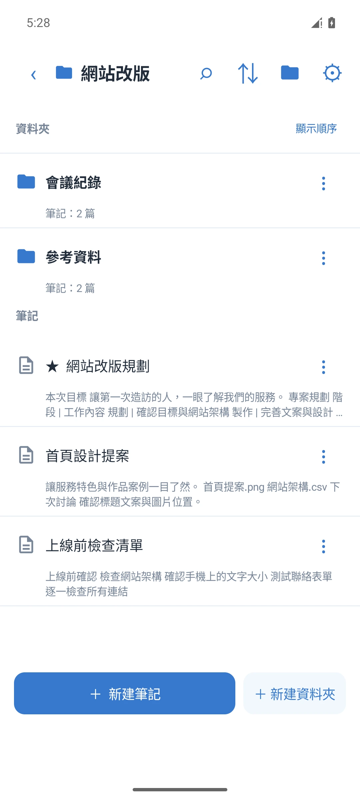
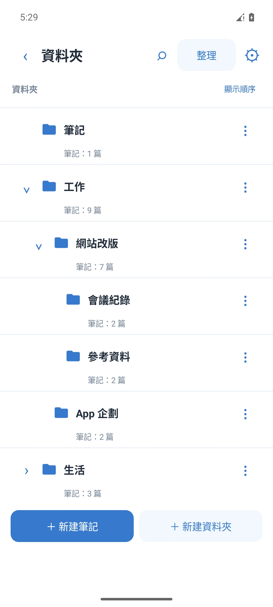
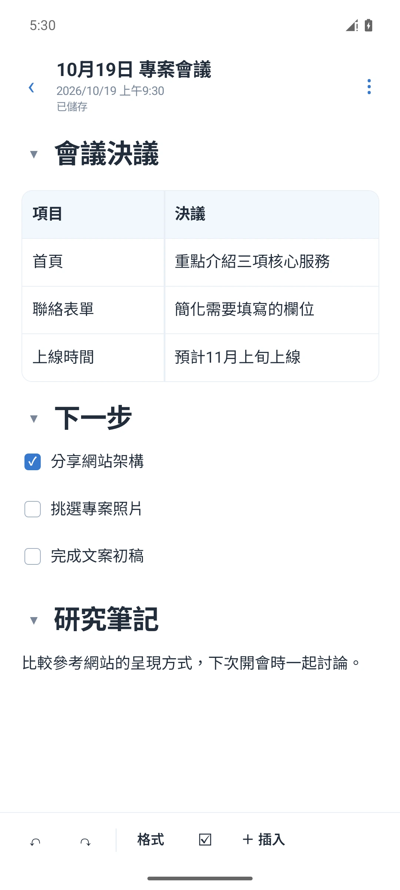
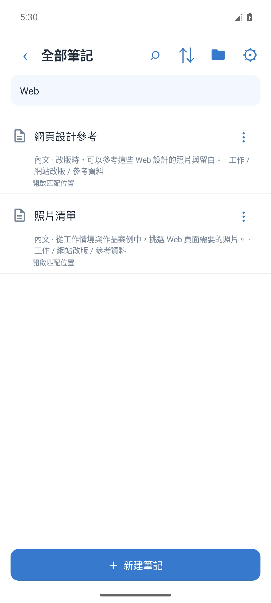
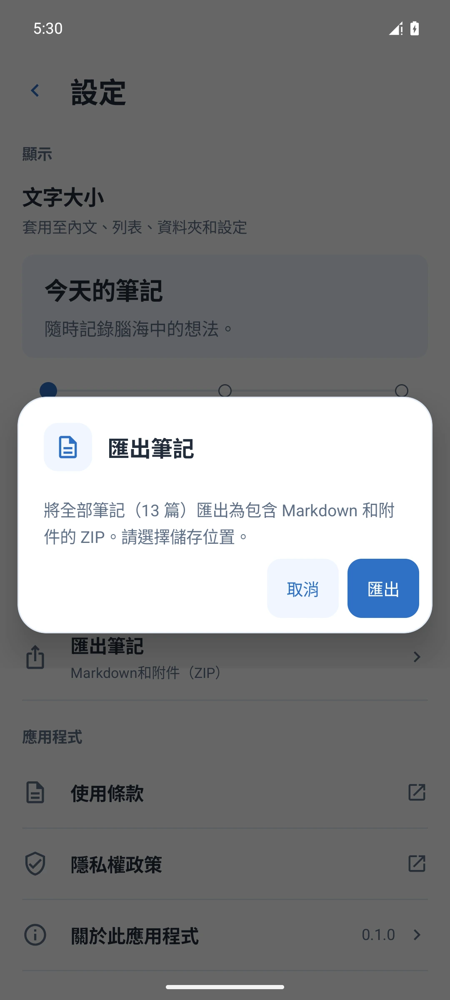

給每個專案，
留一個位置。
例如在「工作」裡建立「網站改版」資料夾，再在裡面加一個「會議紀錄」資料夾。
同一個專案的會議筆記與參考資料，也可以分開放。
-
工作
-
網站改版
-
會議紀錄
- 10月19日 專案會議
- 參考資料
-
-
打開資料夾，
直接記下來。
打開「會議紀錄」資料夾，新建的筆記就會儲存在那裡。之後也可以移動筆記和資料夾。
會議紀錄與資料，
放在同一篇筆記裡。
把會議決策整理成表格，把下一步工作列成待辦清單。也可以附上圖片與檔案，回顧時不用到處找資料。

筆記變多，
也能重新整理。
專案變多時，可以移動資料夾或調整順序。筆記太長時，可以將其中一部分拆成新筆記。原筆記會保留連結，之後可直接開啟拆出的內容。
會議決策
整理上線頁面的架構
比較參考網站與功能
下次開會時確認
找得到筆記，
也帶得走。
忘了放在哪裡？
搜尋內文也能找到。
輸入記得的詞，就能搜尋筆記標題與內文。選取搜尋結果，即可跳到符合的位置。

匯出筆記時，
保留資料夾階層。
將筆記與附件打包成 ZIP，同時保留原有的資料夾階層。匯出後的筆記是 Markdown 檔案，可以在電腦上閱讀。

筆記儲存在裝置上。
不用註冊帳號，離線也能閱讀與編輯筆記。
常見問題
支援哪些裝置？
Strunote 是一款 Android App，可在 Google Play 確認你的裝置是否適用。
需要付費嗎？
可以免費使用。筆記清單和資料夾清單會顯示廣告。
換手機時能移轉筆記嗎？
若 Android 裝置支援資料移轉，初次設定新裝置時，可選擇從舊裝置複製資料，移轉筆記、資料夾與附件。Strunote 不支援跨裝置自動同步。
匯出的 ZIP 可以重新匯入 App 嗎？
ZIP 可用來在 App 之外閱讀筆記和開啟附件。Strunote 不支援匯入 ZIP 檔案。